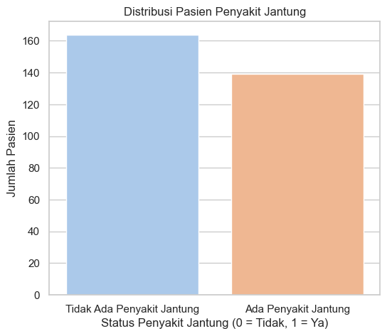
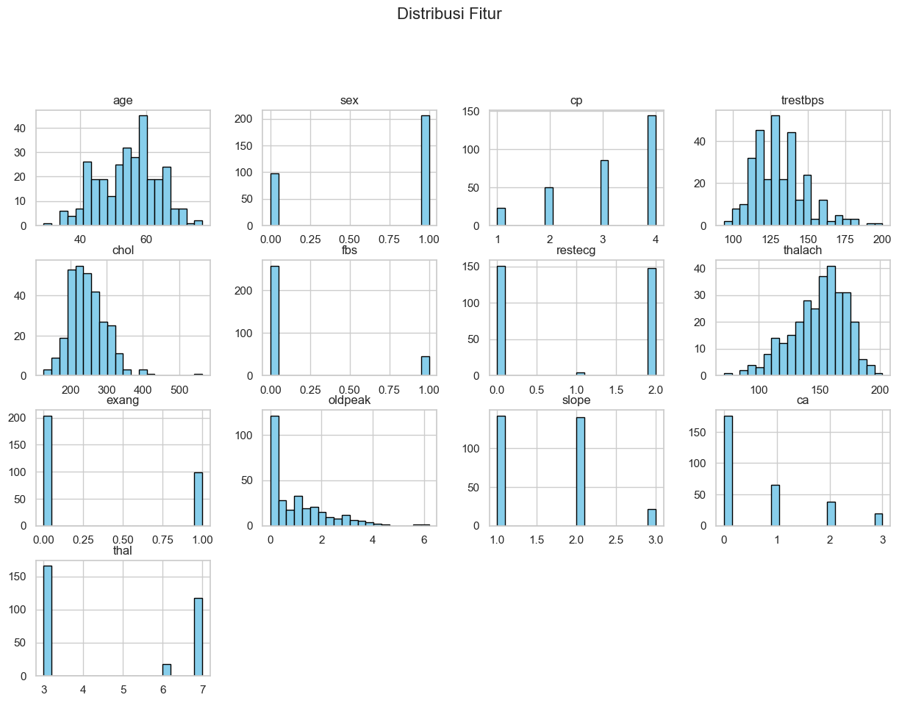
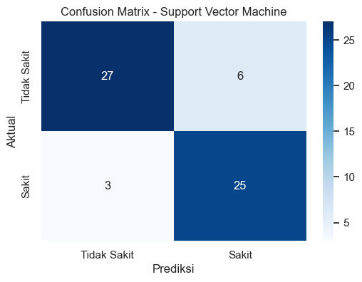
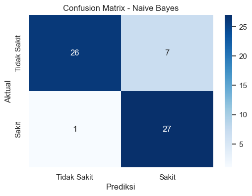
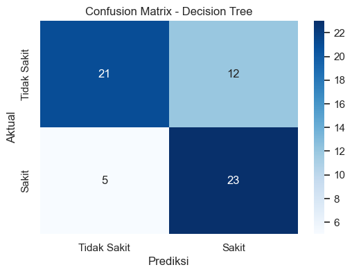
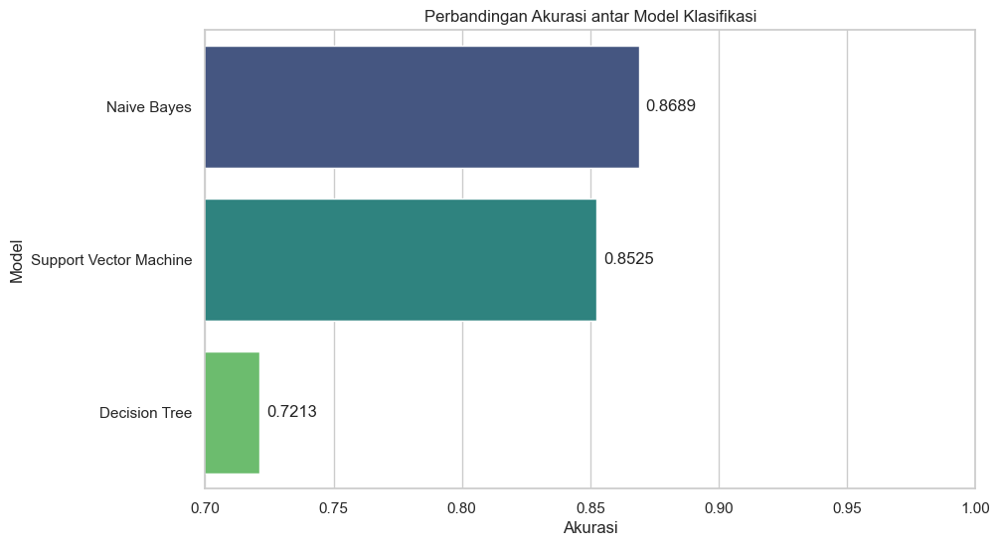
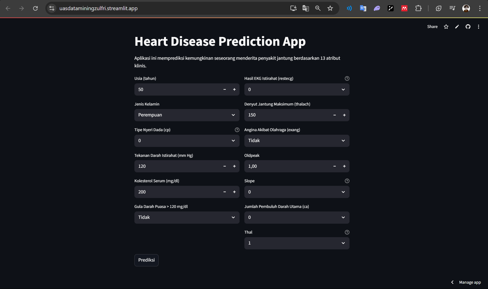
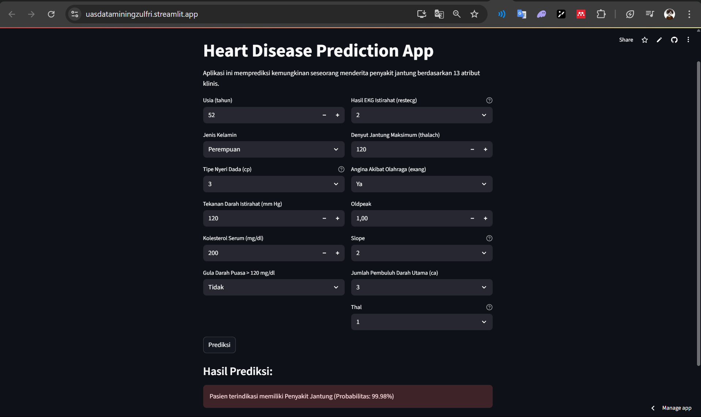

UAS Penambangan Data#
Analisis Perbandingan Algoritma Machine Learning (SVM, Naive Bayes, Decision Tree) untuk Klasifikasi Penyakit Jantung#
Pendahuluan#
Proyek ini bertujuan untuk membangun sebuah model machine learning yang mampu memprediksi keberadaan penyakit jantung pada seorang pasien. Untuk mencapai tujuan ini, digunakan dataset “Heart Disease” dari UCI Machine Learning Repository. Dataset ini terdiri dari 303 data pasien dengan 13 atribut atau fitur dan label yang relevan, seperti usia, jenis kelamin, tipe nyeri dada, tekanan darah, dan kadar kolesterol.
Analisis dimulai dengan tahap Data Understanding, di mana data dieksplorasi untuk memahami karakteristik setiap fitur melalui statistik deskriptif dan visualisasi. Selanjutnya, dilakukan Preprocessing Data yang mencakup penanganan data yang hilang (missing values), normalisasi fitur, dan pembagian dataset menjadi data latih (training) dan data uji (testing).
Pada tahap pemodelan, tiga algoritma klasifikasi—Support Vector Machine, Naive Bayes, dan Decision Tree—diterapkan dan dilatih menggunakan data latih. Kinerja masing-masing model kemudian dievaluasi dan dibandingkan berdasarkan metrik akurasi untuk memilih model terbaik yang akan disimpan dan siap untuk diimplementasikan (deployment
Data Underastanding#
Penjelasan setiap fitur#
Dataset ini berisi 14 atribut yang digunakan untuk memprediksi keberadaan penyakit jantung pada pasien.
Daftar Fitur dan Penjelasannya:
age: Usia pasien (tahun)
sex: Jenis kelamin pasien
• 1 = Laki-laki
• 0 = Perempuancp (chest pain type): Tipe nyeri dada
• 0 = Typical angina (nyeri dada tipikal terkait jantung)
• 1 = Atypical angina (nyeri dada tidak tipikal)
• 2 = Non-anginal pain (bukan nyeri karena angina)
• 3 = Asymptomatic (tanpa gejala nyeri dada)trestbps: Tekanan darah saat istirahat (mm Hg)
chol: Kolesterol serum (mg/dl)
fbs (fasting blood sugar > 120 mg/dl): Gula darah puasa > 120 mg/dl
• 1 = Ya
• 0 = Tidakrestecg: Hasil elektrokardiografi saat istirahat
• 0 = Normal
• 1 = Kelainan gelombang ST-T
• 2 = Hipertrofi ventrikel kirithalach: Denyut jantung maksimum yang tercapai
exang (exercise induced angina): Angina akibat olahraga
• 1 = Ya
• 0 = Tidakoldpeak: Depresi ST akibat olahraga relatif terhadap istirahat
slope: Kemiringan segmen ST saat puncak latihan
• 0 = Upsloping
• 1 = Flat
• 2 = Downslopingca: Jumlah pembuluh darah utama (0-3) yang terlihat berwarna saat fluoroskopi
thal: Hasil tes Thallium Stress
• 1 = Normal
• 2 = Fixed defect (cacat tetap)
• 3 = Reversible defect (cacat yang dapat kembali normal)num (target): Diagnosis penyakit jantung
• 0 = Tidak ada penyakit jantung
• 1, 2, 3, 4 = Ada penyakit jantung
Eksplorasi Data#
import os
import matplotlib.pyplot as plt
import pickle
import pandas as pd
import seaborn as sns
import numpy as np
from ucimlrepo import fetch_ucirepo
sns.set_style('whitegrid')
---------------------------------------------------------------------------
ModuleNotFoundError Traceback (most recent call last)
Cell In[1], line 7
5 import seaborn as sns
6 import numpy as np
----> 7 from ucimlrepo import fetch_ucirepo
9 sns.set_style('whitegrid')
ModuleNotFoundError: No module named 'ucimlrepo'
# fetch dataset
heart_disease = fetch_ucirepo(id=45)
# data (as pandas dataframes)
X = heart_disease.data.features
y = heart_disease.data.targets
# Gabungkan fitur dan target untuk eksplorasi
df = pd.concat([X, y], axis=1)
print("Lima baris pertama dari dataset:")
display(df.head())
Lima baris pertama dari dataset:
| age | sex | cp | trestbps | chol | fbs | restecg | thalach | exang | oldpeak | slope | ca | thal | num | |
|---|---|---|---|---|---|---|---|---|---|---|---|---|---|---|
| 0 | 63 | 1 | 1 | 145 | 233 | 1 | 2 | 150 | 0 | 2.3 | 3 | 0.0 | 6.0 | 0 |
| 1 | 67 | 1 | 4 | 160 | 286 | 0 | 2 | 108 | 1 | 1.5 | 2 | 3.0 | 3.0 | 2 |
| 2 | 67 | 1 | 4 | 120 | 229 | 0 | 2 | 129 | 1 | 2.6 | 2 | 2.0 | 7.0 | 1 |
| 3 | 37 | 1 | 3 | 130 | 250 | 0 | 0 | 187 | 0 | 3.5 | 3 | 0.0 | 3.0 | 0 |
| 4 | 41 | 0 | 2 | 130 | 204 | 0 | 2 | 172 | 0 | 1.4 | 1 | 0.0 | 3.0 | 0 |
# Memeriksa informasi umum dan tipe data
print("Informasi Dataset:")
df.info()
Informasi Dataset:
<class 'pandas.core.frame.DataFrame'>
RangeIndex: 303 entries, 0 to 302
Data columns (total 14 columns):
# Column Non-Null Count Dtype
--- ------ -------------- -----
0 age 303 non-null int64
1 sex 303 non-null int64
2 cp 303 non-null int64
3 trestbps 303 non-null int64
4 chol 303 non-null int64
5 fbs 303 non-null int64
6 restecg 303 non-null int64
7 thalach 303 non-null int64
8 exang 303 non-null int64
9 oldpeak 303 non-null float64
10 slope 303 non-null int64
11 ca 299 non-null float64
12 thal 301 non-null float64
13 num 303 non-null int64
dtypes: float64(3), int64(11)
memory usage: 33.3 KB
Pemeriksaan awal menunjukkan kemungkinan adanya data yang hilang, dan sel ini mengonfirmasinya secara akurat. Dengan menjalankan kode ini, kita secara spesifik menghitung jumlah “sel kosong” atau missing values di setiap kolom. Hasilnya menunjukkan bahwa kolom ca dan thal memiliki beberapa data yang hilang. Mengetahui hal ini sangat penting karena sebagian besar model machine learning tidak dapat bekerja dengan data yang tidak lengkap, sehingga kita perlu menanganinya di tahap preprocessing.
# Memeriksa jumlah missing values di setiap kolom
print("\nJumlah Missing Values per Kolom:")
print(df.isnull().sum())
Jumlah Missing Values per Kolom:
age 0
sex 0
cp 0
trestbps 0
chol 0
fbs 0
restecg 0
thalach 0
exang 0
oldpeak 0
slope 0
ca 4
thal 2
num 0
dtype: int64
# Statistik deskriptif untuk fitur numerik
print("\nStatistik Deskriptif:")
display(df.describe())
Statistik Deskriptif:
| age | sex | cp | trestbps | chol | fbs | restecg | thalach | exang | oldpeak | slope | ca | thal | num | |
|---|---|---|---|---|---|---|---|---|---|---|---|---|---|---|
| count | 303.000000 | 303.000000 | 303.000000 | 303.000000 | 303.000000 | 303.000000 | 303.000000 | 303.000000 | 303.000000 | 303.000000 | 303.000000 | 299.000000 | 301.000000 | 303.000000 |
| mean | 54.438944 | 0.679868 | 3.158416 | 131.689769 | 246.693069 | 0.148515 | 0.990099 | 149.607261 | 0.326733 | 1.039604 | 1.600660 | 0.672241 | 4.734219 | 0.937294 |
| std | 9.038662 | 0.467299 | 0.960126 | 17.599748 | 51.776918 | 0.356198 | 0.994971 | 22.875003 | 0.469794 | 1.161075 | 0.616226 | 0.937438 | 1.939706 | 1.228536 |
| min | 29.000000 | 0.000000 | 1.000000 | 94.000000 | 126.000000 | 0.000000 | 0.000000 | 71.000000 | 0.000000 | 0.000000 | 1.000000 | 0.000000 | 3.000000 | 0.000000 |
| 25% | 48.000000 | 0.000000 | 3.000000 | 120.000000 | 211.000000 | 0.000000 | 0.000000 | 133.500000 | 0.000000 | 0.000000 | 1.000000 | 0.000000 | 3.000000 | 0.000000 |
| 50% | 56.000000 | 1.000000 | 3.000000 | 130.000000 | 241.000000 | 0.000000 | 1.000000 | 153.000000 | 0.000000 | 0.800000 | 2.000000 | 0.000000 | 3.000000 | 0.000000 |
| 75% | 61.000000 | 1.000000 | 4.000000 | 140.000000 | 275.000000 | 0.000000 | 2.000000 | 166.000000 | 1.000000 | 1.600000 | 2.000000 | 1.000000 | 7.000000 | 2.000000 |
| max | 77.000000 | 1.000000 | 4.000000 | 200.000000 | 564.000000 | 1.000000 | 2.000000 | 202.000000 | 1.000000 | 6.200000 | 3.000000 | 3.000000 | 7.000000 | 4.000000 |
Visualisasi Data#
Salah satu pertanyaan paling fundamental dalam masalah klasifikasi adalah: “Apakah dataset kita seimbang?”. Sel ini bertujuan menjawabnya dengan memvisualisasikan distribusi variabel target. Pertama, kita menyederhanakan kolom target num menjadi format biner (0 untuk tidak sakit dan 1 untuk sakit) agar lebih mudah diinterpretasikan. Kemudian, dengan countplot dari Seaborn, kita membuat plot batang yang menunjukkan perbandingan jumlah pasien yang didiagnosis menderita penyakit jantung dengan yang tidak. Visualisasi ini krusial untuk mengetahui apakah ada ketidakseimbangan kelas yang signifikan, yang dapat memengaruhi kinerja model.
# Visualisasi distribusi variabel target 'num'
# Mengubah 'num' menjadi biner untuk visualisasi yang lebih jelas (0 = Tidak Sakit, 1 = Sakit)
df['has_disease'] = df['num'].apply(lambda x: 1 if x > 0 else 0)
sns.set_theme(style="whitegrid")
plt.figure(figsize=(6, 5))
sns.countplot(x='has_disease', hue='has_disease',
data=df, palette='pastel', legend=False)
plt.title('Distribusi Pasien Penyakit Jantung')
plt.xlabel('Status Penyakit Jantung (0 = Tidak, 1 = Ya)')
plt.ylabel('Jumlah Pasien')
plt.xticks([0, 1], ['Tidak Ada Penyakit Jantung', 'Ada Penyakit Jantung'])
plt.show()

Setelah memahami distribusi target, kita beralih ke distribusi setiap fitur individual. Dengan membuat histogram untuk setiap kolom numerik, kita dapat “melihat” bentuk data. Apakah distribusi usia pasien cenderung normal? Apakah kadar kolesterolnya miring ke kanan? Visualisasi dalam bentuk grid ini memberikan pemahaman intuitif tentang penyebaran, pemusatan, dan kemiringan data pada setiap fitur, yang menjadi informasi berharga untuk tahap preprocessing selanjutnya, seperti normalisasi.
# Visualisasi distribusi fitur menggunakan histogram
numerical_features = ['age','sex','cp','trestbps', 'chol', 'fbs', 'restecg', 'thalach', 'exang', 'oldpeak', 'slope', 'ca', 'thal']
df[numerical_features].hist(bins=20, figsize=(
15, 10), layout=(4, 4), color='skyblue', edgecolor='black')
plt.suptitle('Distribusi Fitur', y=1.02, size=16)
plt.show()

Preprocessing Data#
Menangani Missing Values#
Berdasarkan temuan dari tahap eksplorasi, kita sekarang melakukan tindakan pembersihan data. Kita mengisi nilai-nilai yang hilang pada kolom ca dan thal dengan menggunakan modus (nilai yang paling sering muncul) dari masing-masing kolom. Metode ini dipilih karena kedua fitur tersebut bersifat kategorikal dan jumlah data yang hilang relatif kecil, sehingga imputasi dengan modus adalah strategi yang aman dan masuk akal. Setelah langkah ini, dataset kita menjadi lengkap dan siap untuk diproses lebih lanjut.
df_processed = df.copy()
# Karena jumlah missing values sedikit, kita akan mengisinya dengan nilai yang paling sering muncul (modus)
df_processed['ca'] = df_processed['ca'].fillna(df_processed['ca'].mode()[0])
df_processed['thal'] = df_processed['thal'].fillna(df_processed['thal'].mode()[0])
print("Missing values setelah diisi:")
print(df_processed.isnull().sum())
Missing values setelah diisi:
age 0
sex 0
cp 0
trestbps 0
chol 0
fbs 0
restecg 0
thalach 0
exang 0
oldpeak 0
slope 0
ca 0
thal 0
num 0
has_disease 0
dtype: int64
Binarisasi Variabel Target#
Dengan data yang sudah bersih, langkah selanjutnya adalah memformatnya untuk proses pemodelan. Kita memisahkan fitur-fitur (seperti usia, kolesterol, dan lainnya) ke dalam variabel X, sedangkan label atau target (apakah pasien menderita penyakit jantung atau tidak) disimpan dalam variabel y. Variabel X berisi semua kolom kecuali kolom target, sementara y hanya berisi kolom target biner (has_disease).
# Kolom 'has_disease' sudah kita buat sebelumnya
y = df_processed['has_disease']
X = df_processed.drop(['num', 'has_disease'], axis=1)
print("Distribusi Target Setelah Binarisasi:")
print(y.value_counts())
Distribusi Target Setelah Binarisasi:
has_disease
0 164
1 139
Name: count, dtype: int64
Normalisasi (Scaling) Fitur Numerik#
Model machine learning, terutama yang berbasis jarak seperti SVM, seringkali bekerja lebih baik jika semua fitur memiliki skala yang sama. Oleh karena itu, dilakukan normalisasi menggunakan StandardScaler. Proses ini mengubah distribusi setiap fitur sehingga memiliki rata-rata 0 dan standar deviasi 1. Dengan demikian, fitur dengan rentang nilai besar (seperti kolesterol) tidak akan mendominasi fitur dengan rentang nilai kecil (seperti sex).
Selain itu, objek scaler yang telah “belajar” parameter dari data disimpan menggunakan pickle. Langkah ini sangat penting agar data baru di masa depan dapat diproses dengan cara yang sama persis saat model diimplementasikan.
from sklearn.preprocessing import StandardScaler
os.makedirs('ModelUAS', exist_ok=True)
scaler = StandardScaler()
scaler.fit(X)
X_scaled = pd.DataFrame(scaler.transform(X), columns=X.columns)
# Simpan scaler menggunakan pickle untuk digunakan di aplikasi Streamlit
scaler_path = os.path.join('ModelUAS', 'scaler.pkl')
with open(scaler_path, 'wb') as file:
pickle.dump(scaler, file)
print(f"Scaler telah disimpan di: {scaler_path}")
print("\nData fitur setelah di-scaling (5 baris pertama):")
display(X_scaled.head())
Scaler telah disimpan di: ModelUAS\scaler.pkl
Data fitur setelah di-scaling (5 baris pertama):
| age | sex | cp | trestbps | chol | fbs | restecg | thalach | exang | oldpeak | slope | ca | thal | |
|---|---|---|---|---|---|---|---|---|---|---|---|---|---|
| 0 | 0.948726 | 0.686202 | -2.251775 | 0.757525 | -0.264900 | 2.394438 | 1.016684 | 0.017197 | -0.696631 | 1.087338 | 2.274579 | -0.711131 | 0.660004 |
| 1 | 1.392002 | 0.686202 | 0.877985 | 1.611220 | 0.760415 | -0.417635 | 1.016684 | -1.821905 | 1.435481 | 0.397182 | 0.649113 | 2.504881 | -0.890238 |
| 2 | 1.392002 | 0.686202 | 0.877985 | -0.665300 | -0.342283 | -0.417635 | 1.016684 | -0.902354 | 1.435481 | 1.346147 | 0.649113 | 1.432877 | 1.176752 |
| 3 | -1.932564 | 0.686202 | -0.165268 | -0.096170 | 0.063974 | -0.417635 | -0.996749 | 1.637359 | -0.696631 | 2.122573 | 2.274579 | -0.711131 | -0.890238 |
| 4 | -1.489288 | -1.457296 | -1.208521 | -0.096170 | -0.825922 | -0.417635 | 1.016684 | 0.980537 | -0.696631 | 0.310912 | -0.976352 | -0.711131 | -0.890238 |
Membagi Data menjadi Training dan Testing set#
Pembagian Data: Training dan Testing Set
Sebelum menguji performa model, sangat penting untuk memastikan bahwa evaluasi dilakukan secara adil dan objektif. Oleh karena itu, dataset dibagi menjadi dua bagian:
Training set (80%): Digunakan untuk “mengajari” model mengenali pola dari data.
Testing set (20%): Digunakan untuk menguji seberapa baik model dapat memprediksi data yang belum pernah dilihat sebelumnya.
Pembagian ini dilakukan secara stratified, yaitu dengan menjaga proporsi pasien yang sakit dan tidak sakit tetap seimbang di kedua set. Dengan demikian, hasil pengujian menjadi lebih representatif dan tidak bias terhadap salah satu kelas.
Langkah ini memastikan bahwa model tidak hanya menghafal data, tetapi benar-benar belajar untuk melakukan prediksi pada data baru.
from sklearn.model_selection import train_test_split
X_train, X_test, y_train, y_test = train_test_split(X_scaled, y, test_size=0.2, random_state=42, stratify=y)
print(f"Ukuran X_train: {X_train.shape}")
print(f"Ukuran X_test: {X_test.shape}")
Ukuran X_train: (242, 13)
Ukuran X_test: (61, 13)
Klasifikasi (Pemodelan)#
Pada tahap ini, tiga kandidat model dengan pendekatan berbeda diinisialisasi: Support Vector Machine (mencari batas pemisah terbaik), Naive Bayes (berbasis probabilitas), dan Decision Tree (berbasis aturan “jika-maka”). Masing-masing model kemudian dilatih menggunakan data latih (X_train dan y_train). Proses .fit() memungkinkan setiap algoritma mempelajari pola-pola yang membedakan antara pasien dengan dan tanpa penyakit jantung.
# Mengimpor model-model yang akan digunakan
from sklearn.svm import SVC
from sklearn.naive_bayes import GaussianNB
from sklearn.tree import DecisionTreeClassifier
# Inisialisasi model
models = {
"Support Vector Machine": SVC(kernel='linear', probability=True, random_state=42),
"Naive Bayes": GaussianNB(),
"Decision Tree": DecisionTreeClassifier(random_state=42)
}
# Melatih setiap model
for name, model in models.items():
print(f"Melatih model {name}...")
model.fit(X_train, y_train)
print("\nSemua model telah dilatih.")
Melatih model Support Vector Machine...
Melatih model Naive Bayes...
Melatih model Decision Tree...
Semua model telah dilatih.
Evaluasi Model#
Sel ini melakukan evaluasi komprehensif pada data uji yang belum pernah dilihat sebelumnya. Untuk setiap model, dihitung akurasi (seberapa sering prediksi benar), dibuat laporan klasifikasi (yang merinci precision, recall, dan f1-score), serta ditampilkan confusion matrix. Visualisasi confusion matrix dalam bentuk heatmap sangat berguna untuk mengidentifikasi secara spesifik di mana model melakukan kesalahan, seperti salah mendiagnosis pasien sakit sebagai sehat, atau sebaliknya.
from sklearn.metrics import classification_report, confusion_matrix, accuracy_score
evaluation_results = {}
for name, model in models.items():
# Prediksi pada data test
y_pred = model.predict(X_test)
# Menghitung akurasi
accuracy = accuracy_score(y_test, y_pred)
evaluation_results[name] = accuracy
print(f"--- Evaluasi untuk {name} ---")
print(f"Akurasi: {accuracy:.4f}")
# Laporan Klasifikasi
print("Classification Report:")
print(classification_report(y_test, y_pred,
target_names=['Tidak Sakit', 'Sakit']))
# Confusion Matrix
cm = confusion_matrix(y_test, y_pred)
plt.figure(figsize=(6, 4))
sns.heatmap(cm, annot=True, fmt='d', cmap='Blues', xticklabels=['Tidak Sakit', 'Sakit'], yticklabels=['Tidak Sakit', 'Sakit'])
plt.xlabel('Prediksi')
plt.ylabel('Aktual')
plt.title(f'Confusion Matrix - {name}')
plt.show()
print("\n" + "="*60 + "\n")
--- Evaluasi untuk Support Vector Machine ---
Akurasi: 0.8525
Classification Report:
precision recall f1-score support
Tidak Sakit 0.90 0.82 0.86 33
Sakit 0.81 0.89 0.85 28
accuracy 0.85 61
macro avg 0.85 0.86 0.85 61
weighted avg 0.86 0.85 0.85 61

============================================================
--- Evaluasi untuk Naive Bayes ---
Akurasi: 0.8689
Classification Report:
precision recall f1-score support
Tidak Sakit 0.96 0.79 0.87 33
Sakit 0.79 0.96 0.87 28
accuracy 0.87 61
macro avg 0.88 0.88 0.87 61
weighted avg 0.89 0.87 0.87 61

============================================================
--- Evaluasi untuk Decision Tree ---
Akurasi: 0.7213
Classification Report:
precision recall f1-score support
Tidak Sakit 0.81 0.64 0.71 33
Sakit 0.66 0.82 0.73 28
accuracy 0.72 61
macro avg 0.73 0.73 0.72 61
weighted avg 0.74 0.72 0.72 61

============================================================
Perbandingan Model Untuk Deployment#
# Membuat DataFrame dari hasil evaluasi untuk perbandingan
df_results = pd.DataFrame(
list(evaluation_results.items()), columns=['Model', 'Accuracy'])
df_results = df_results.sort_values(
by='Accuracy', ascending=False).reset_index(drop=True)
print("Perbandingan Akurasi Model:")
display(df_results)
# Visualisasi perbandingan model
plt.figure(figsize=(10, 6))
splot = sns.barplot(
x='Accuracy',
y='Model',
data=df_results,
palette='viridis',
hue='Model',
legend=False
)
for p in splot.patches:
splot.annotate(format(p.get_width(), '.4f'),
(p.get_width(), p.get_y() + p.get_height() / 2.),
ha='left', va='center',
xytext=(5, 0),
textcoords='offset points')
plt.title('Perbandingan Akurasi antar Model Klasifikasi')
plt.xlabel('Akurasi')
plt.ylabel('Model')
plt.xlim(0.7, 1.0)
plt.show()
Perbandingan Akurasi Model:
| Model | Accuracy | |
|---|---|---|
| 0 | Naive Bayes | 0.868852 |
| 1 | Support Vector Machine | 0.852459 |
| 2 | Decision Tree | 0.721311 |

Memilih Model Terbaik#
# Pilih model terbaik
best_model_name = df_results.iloc[0]['Model']
best_model = models[best_model_name]
print(f"Model terbaik adalah: {best_model_name} dengan akurasi {evaluation_results[best_model_name]:.4f}")
os.makedirs('ModelUAS', exist_ok=True)
# Simpan model terbaik ke dalam sebuah file menggunakan pickle
model_path = os.path.join('ModelUAS', 'best_heart_disease_model.pkl')
with open(model_path, 'wb') as file:
pickle.dump(best_model, file)
print(f"Model terbaik telah disimpan sebagai '{model_path}'")
Model terbaik adalah: Naive Bayes dengan akurasi 0.8689
Model terbaik telah disimpan sebagai 'ModelUAS\best_heart_disease_model.pkl'
Integrasi Model Dengan Web(Deployment)#
Setelah model terbaik berhasil dipilih dan disimpan, langkah selanjutnya adalah membuatnya dapat diakses dan digunakan oleh pengguna melalui antarmuka web yang sederhana. Untuk tujuan ini, library Streamlit dipilih karena kemudahannya dalam mengubah skrip data menjadi aplikasi web interaktif.
Proses implementasi dimulai dengan menginstal Streamlit melalui terminal menggunakan perintah pip install streamlit. Kemudian, sebuah file Python baru bernama app.py dibuat sebagai pusat dari aplikasi web.
Di dalam file app.py ini, model Naive Bayes dan scaler yang sebelumnya telah disimpan (.pkl) dimuat kembali. Dengan menggunakan fungsi-fungsi dari Streamlit, dibuatlah sebuah antarmuka pengguna yang terdiri dari beberapa bagian:
Tampilan Informasi: Menjelaskan tentang fitur-fitur yang menjadi input serta menampilkan hasil evaluasi model untuk memberikan konteks kepada pengguna.
Form Input: Sebuah formulir interaktif di mana pengguna dapat memasukkan data pasien sesuai dengan 13 fitur yang dibutuhkan oleh model.
Tampilan Hasil: Setelah pengguna mengisi form dan menekan tombol prediksi, aplikasi akan menampilkan hasil prediksi dari model, yaitu apakah pasien terindikasi memiliki penyakit jantung atau tidak.
Seluruh kode untuk membangun tampilan web ini ditulis langsung di dalam file app.py, menunjukkan kekuatan dan kesederhanaan Streamlit.
Source Code: Kode lengkap untuk aplikasi web ini dapat diakses melalui repositori GitHub: ZulfRizz/streamlit-UAS
Aplikasi Web: Hasil akhir dari implementasi ini dapat diakses dan dicoba secara langsung melalui tautan berikut: https://uasdataminingzulfri.streamlit.app/
Berikut adalah hasil dari webnya. Terdapat form untuk memasukkan fitur-fitur yang nantinya akan diprediksi:

dan ini adalah contoh hasil prediksi:
